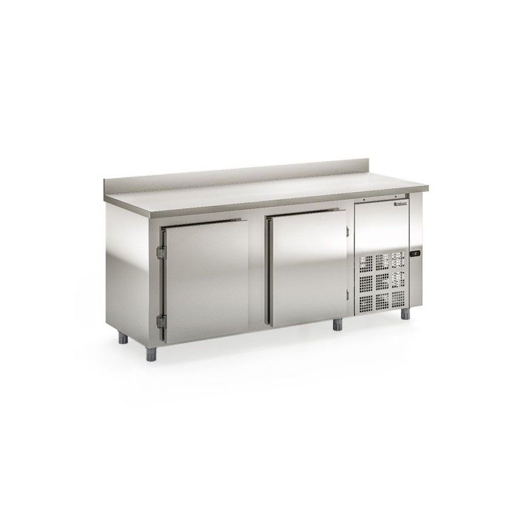

Title of a longer featured blog post
Multiple lines of text that form the lede, informing new readers quickly and efficiently about what’s most interesting in this post’s contents.
Restaurante
Apoio em cozinhas industriais de hotéis, restaurantes, clubes, bares,
Conservação e Exposição de frios, laticínios, bebidas e alimentos diversos (não congelados)
Temperatura: 0 a +7°C
Adicionar ao Carrinho
Balcão de Encosto
Adicionar ao Carrinho
Placeholder
Refrigeração
Refrigerador Vertical Conveniência
Conservação e Exposição de bebidas, frios e laticínios
Refrigeração: Ar forçado com evaporador aletado
Temperatura: 0 a +7C
Adicionar ao Carrinho
Expositor Vertical 5 Portas
Adicionar ao Carrinho
Açougue
Mesas, cabeçotes e gabinete da Serra Fita para Ossos SFO 3.10 são construídos em chapa de aço inox 304 ou 430. Polias e volantes em ferro fundido.
Equipamento indicado para uso em: açougues, peixarias e supermercados.
Adicionar ao Carrinho
Serra Fita
Adicionar ao Carrinho
Panificação
Capacidade para acomodar 5 esteiras.
Câmara maior que proporciona assamento uniforme.
Adicionar ao Carrinho